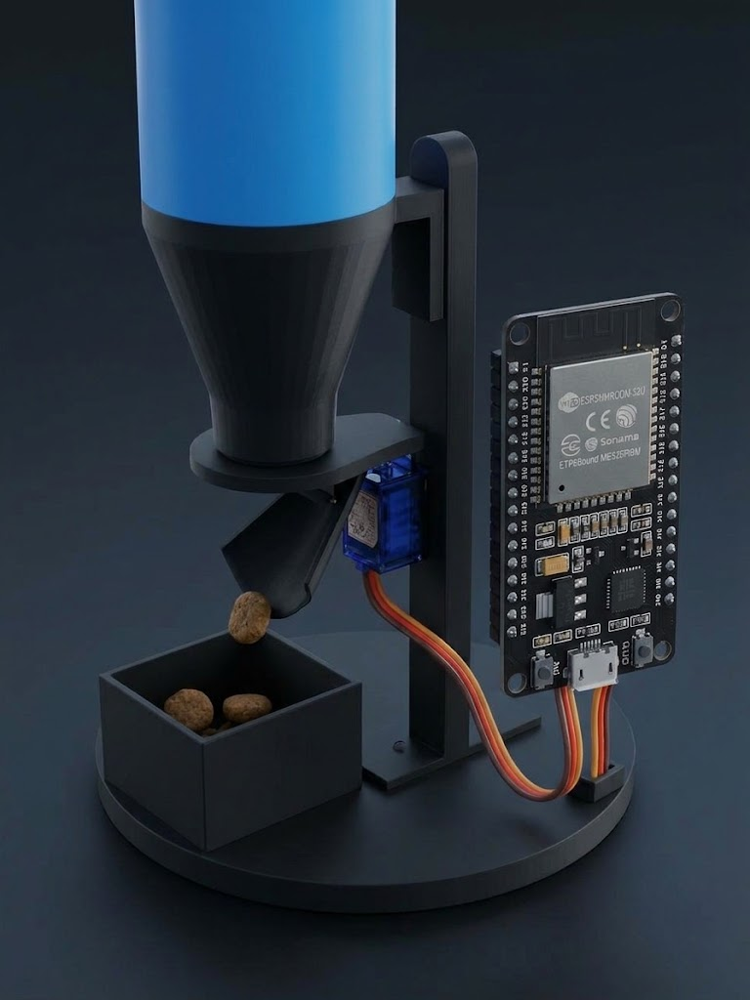
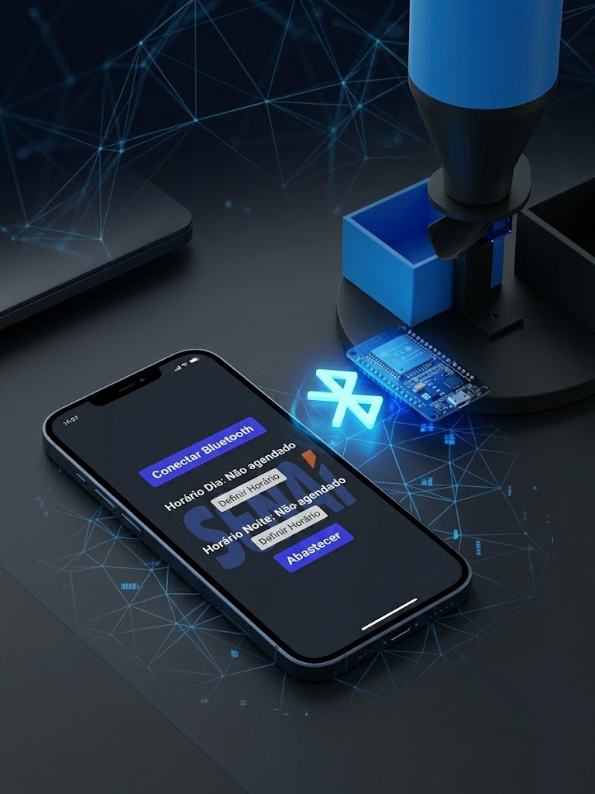
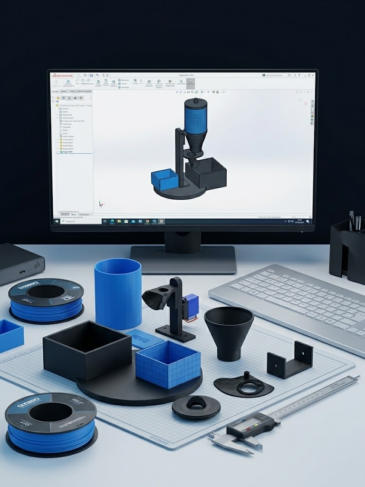

Mecanismo Inteligente
Equipado com o poderoso microcontrolador ESP32, o alimentador utiliza um servo motor preciso que abre e fecha o compartimento. A ração cai exatamente na medida certa, sem desperdícios.
AutomaçãoConheça o Ração B2B2: nosso alimentador automatizado. Chega de preocupações com horários, nós conectamos a tecnologia ao bem-estar do seu animal.
Conhecer o Produto
Uma empresa criada para o projeto IFA, com a missão de desenvolver soluções de automação acessíveis e inteligentes. Nosso principal produto, o Ração B2B2, nasceu da necessidade de facilitar a vida de pessoas que passam muito tempo fora de casa e precisam alimentar seus pets.
Utilizamos tecnologia de ponta, impressão 3D e microcontroladores para entregar um produto funcional, moderno e controlado diretamente da palma da sua mão.

Equipado com o poderoso microcontrolador ESP32, o alimentador utiliza um servo motor preciso que abre e fecha o compartimento. A ração cai exatamente na medida certa, sem desperdícios.
Automação
Controle total pelo celular! Através de uma conexão Bluetooth rápida, nosso aplicativo permite definir horários para o dia e para a noite, além de um botão para abastecer instantaneamente.
Conectividade
Estrutura modular e resistente, totalmente projetada e impressa em 3D. Peças de fácil encaixe que garantem a durabilidade do reservatório e do mecanismo do servo motor.
InovaçãoGostou do Ração B2B2? Escaneie o QR Code ou fale conosco!
Escola Técnica SENAI - Apresentação IFA